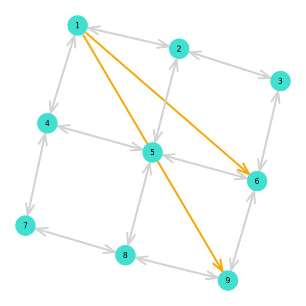
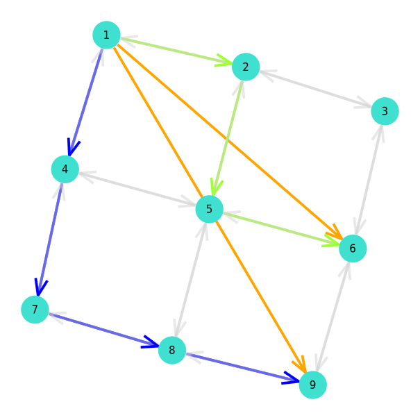
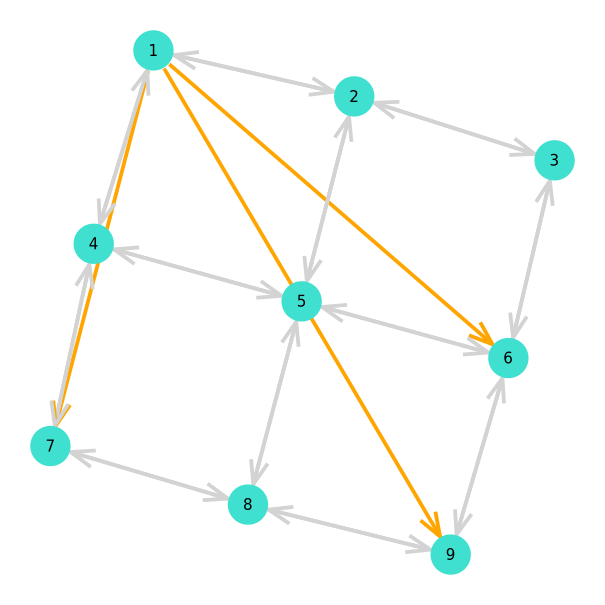

Solving Compact Formulation
Solving Compact Formulation with state of the art LP solver. Interfacing with solver is done using the JuMP.jl package.
First define a simple MCF problem :
julia> using Graphs, MultiFlows
julia> g = grid((3,3))
{9, 12} undirected simple Int64 graph
julia> pb = MCF(gr, ones(ne(g)), ones(ne(g)), [Demand(1,9,1.0), Demand(1,6,1.0)])
MCF(nv = 9, ne = 24, nk = 2)
Demand{Int64, Float64}(1, 9, 1.0)
Demand{Int64, Float64}(1, 6, 1.0)
julia> solve_compact(pb)
MCFSolution
Demand k = 1
1.0 on VertexPath{Int64}([1, 2, 5, 8, 9])
Demand k = 2
1.0 on VertexPath{Int64}([1, 4, 5, 6])
| Problem | Solution |
|---|---|
|  |  |
Adding a demand 1 -> 7 renders the problem infeasible.
julia> add_demand!(pb, Demand(1, 7, 1.0))
3-element Vector{Demand{Int64, Float64}}:
Demand{Int64, Float64}(1, 9, 1.0)
Demand{Int64, Float64}(1, 6, 1.0)
Demand{Int64, Float64}(1, 7, 1.0)
julia> solve_compact(pb)
ERROR: Infeasible problem
[...]Max-acceptance
We can solve the Max-acceptance variant of the problem in which a demand may not be routed and incurs a penalty M = sum(costs(pb)).
julia> solve_compact(pb)
MCFSolution
Demand k = 1
Demand k = 2
1.0 on VertexPath{Int64}([1, 2, 3, 6])
Demand k = 3
1.0 on VertexPath{Int64}([1, 4, 7])
| Problem | Solution |
|---|---|
|  |
Index
MultiFlows.add_capacity_constraintsMultiFlows.add_flow_constraintsMultiFlows.add_objective_valueMultiFlows.create_compact_modelMultiFlows.flow_constraint_rhsMultiFlows.solve_compact
Full docs
MultiFlows.add_capacity_constraints — Methodadd_capacity_constraints(pb::MCF, model::JuMP.Model)Add edge capacity constraints to the JuMP.Model.
MultiFlows.add_flow_constraints — Functionadd_flow_constraints(pb::MCF, model::JuMP.Model, max_acceptance::Bool=false)Add flow conservation constraints to the JuMP model.
MultiFlows.add_objective_value — Functionadd_objective_value(pb::MCF, model::JuMP.Model, max_acceptance::Bool=false)Add objective value to the JuMP.Model.
MultiFlows.create_compact_model — Methodcreate_compact_model(pb::MCF)Create JuMP model corresponding to the provided MCF problem pb.
MultiFlows.flow_constraint_rhs — Functionflow_constraint_rhs(pb::MCF, v::Int64, k::Int64, model::JuMP.Model, max_acceptance::Bool=false)Compute the flow conservation right hand side value for vertex v and demand k.
MultiFlows.solve_compact — Methodsolve_compact(pb::MCF)Solve the compact formulation with state of the art solver. Returns a tuple (MCFSolution, SolverStatistics).
Example
julia> gr = grid((3,3));
julia> pb = MCF(gr, ones(ne(gr)), ones(ne(gr)), [Demand(1,9,1.0), Demand(1,6,1.0)])
MCF(nv = 9, ne = 24, nk = 2)
Demand{Int64, Float64}(1, 9, 1.0)
Demand{Int64, Float64}(1, 6, 1.0)
julia> sol, ss = solve_compact(pb);
julia> sol
MCFSolution
Demand k = 1
1.0 on VertexPath{Int64}([1, 2, 5, 8, 9])
Demand k = 2
1.0 on VertexPath{Int64}([1, 4, 5, 6])
julia> ss
{
"solve_time": 0.00042557716369628906,
"objective_sense": "MIN_SENSE",
"dual_objective_value": 7.0,
"result_count": 1,
"node_count": -1,
"objective_value": 7.0,
"objective_bound": 0.0,
"termination_status": "OPTIMAL",
"simplex_iterations": 10,
"barrier_iterations": 0,
"dual_status": "FEASIBLE_POINT",
"primal_status": "FEASIBLE_POINT",
"solver_name": "HiGHS",
"relative_gap": null
}